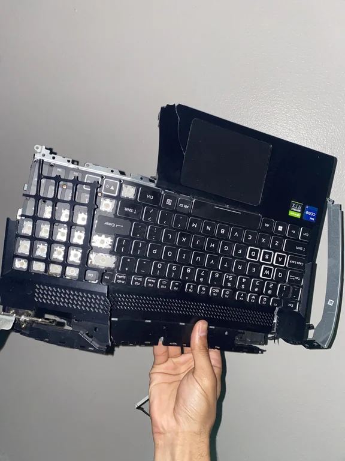
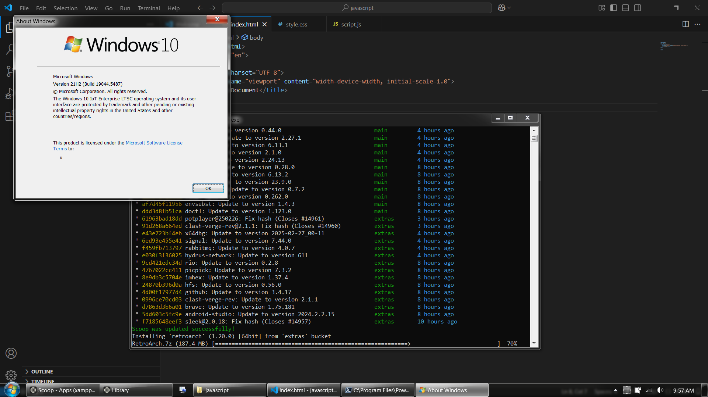

Linux is cool and all but I have to give up on daily driving due to following reasons:
My laptop spec:
So, that why I gave up on Linux and came back to Windows 10 IoT Enterprise LTSC 2021
No way in hell I will ever use non LTSC version of Windows
Btw I found this wonderful Windows 7 Theme for Windows 10 and I love it, so not everything is bleak (●'◡'●)
It looks absolutely gorgeous, the developer also modded in Windows 7 logonUI so I adore it (*￣▽￣*)ブ
This is what it looks like:
Update: I no longer use Windows 7 Theme and just use default Windows 10 Dark Theme as it removed the feature to change lock screen and the registry hack you used to change lockscreen in real Windows 7 works until you restart the laptop and the worst thing is that when you uninstall the theme the ability to change lock screen wallpaper is forever gone and I couldn't find any way to restore it. I reinstalled Windows 10 because I feared that it might have broken something else I was unaware of and would bite me in the ass in the future.